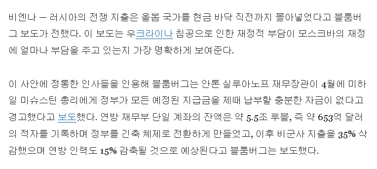

https://www.defensenews.com/global/europe/2026/08/28/russia-is-running-out-of-cash-due-to-its-war-in-ukraine-report/
이미 군사 부분 이외의 모든 예산이 큰폭으로 삭감된 상황인데
여기서 35%를 더 삭감하는 바람에 다음 회계연도부터
러시아의 교육, 복지, 의료, 과학 R&D 예산은 사실상 사라지는 수준.
이 나라는 전쟁이 끝나더라도 일단 미래는 확실히 없네.
박살난 경제는 러시아의 전통